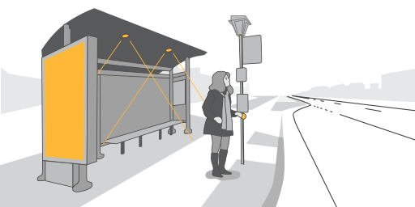

Northeast Blackout (62) (65)
On August 14 2003, a power outage affected the Northeastern and Midwestern United States, together with the Canadian province of Ontario. It took between two days to one-two weeks for power to be completely restored. An estimated 10 million people in Canada and 45 million people in the United States were affected by this blackout, and what should have been just a local blackout, spread to over eight U.S. states and Southern and Central Ontario.
The primary cause was a software bug in the alarm system at the control roomn of FirstEnergy. In summary, the bug didn't make it possible to restablish the energy after overloaded trasmission lines dropped into foliage, and so the Blackout was worse. The program was resonsible for checking if the power supply and the loads remain balanced. With this, computer systems assist those opretations, by predicting an overload and analyzing the state of their network. The software bug was discovered to be the race condition bug, that existed in General Electric Energy's Unix-based XA/21 energy management system. The bug made alerts for important changes in system state inexistent for the System operators.
The effects
Other than just creating difficulties for people to do their everyday actions, the blackout of 2003 prompted the Government
to include a provision for reliability in the Energy Policy Act of 2005. Each Electricity provider in U.S. must succeed
the standards of the North American Electric Reliability Corporation. The blackout also led to changes in the U.S. national
energy policy and also homeland security. In fact, during the blackout, no system would detect illegal border crossing
, port landings or hacking attempts to vulnerable sites. This led to a considerable fear that in the future some blackouts, will
lead to terrorist attacks, without any security. The idea of implementing solar panels, were taken into consideration,
and maybe in the future we'll see some progress regarding the implementation of solar energy as a source of energy in the case of
blackouts.
